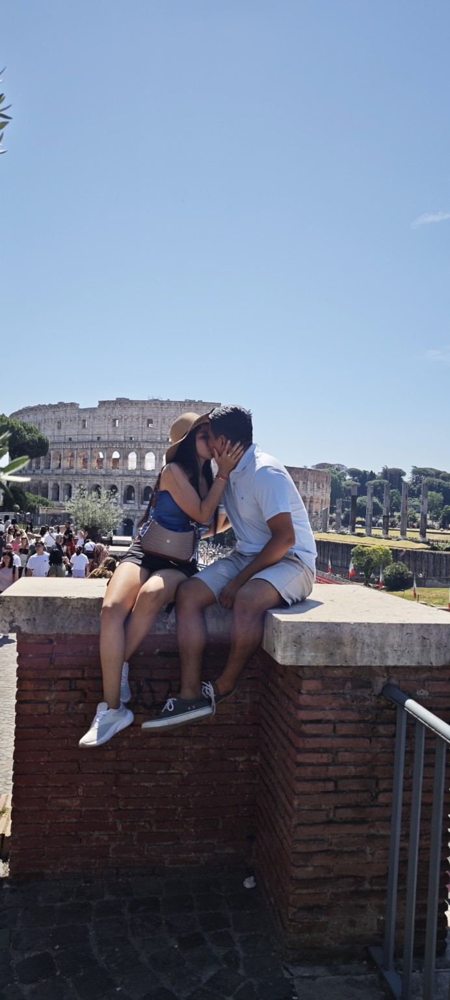
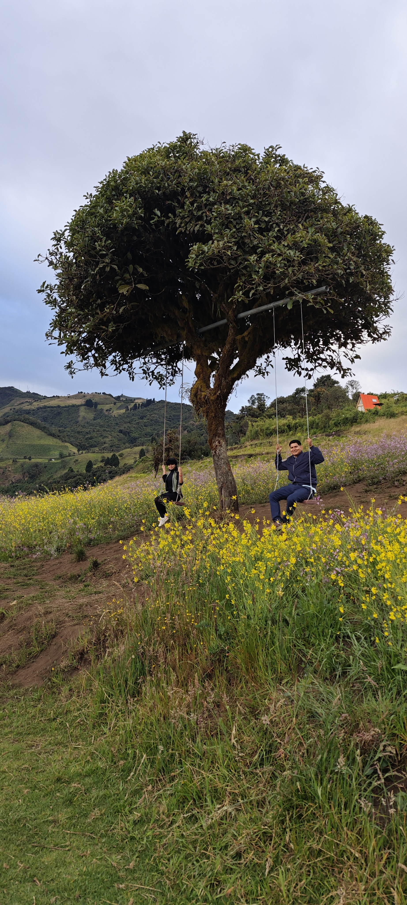
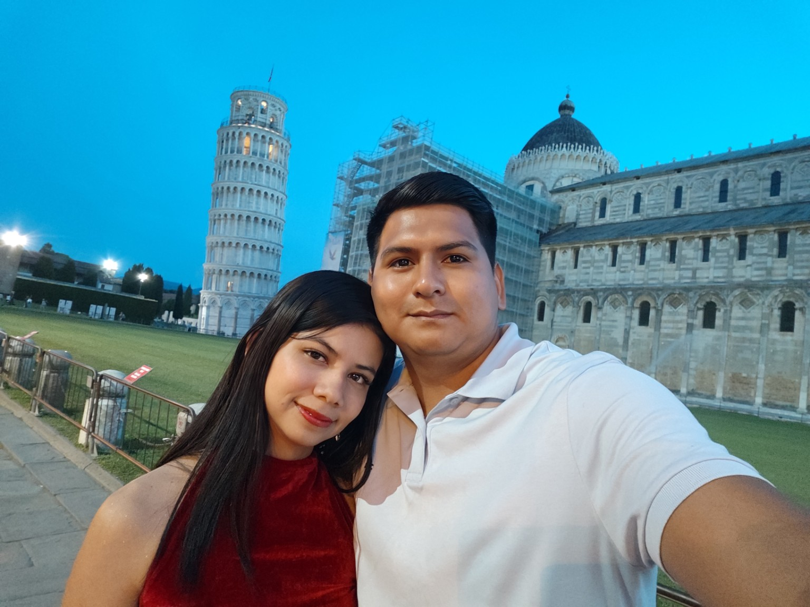
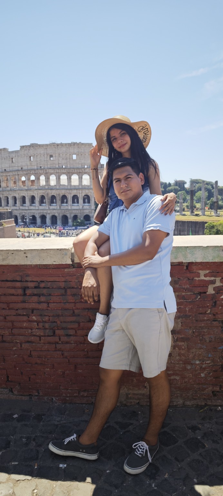
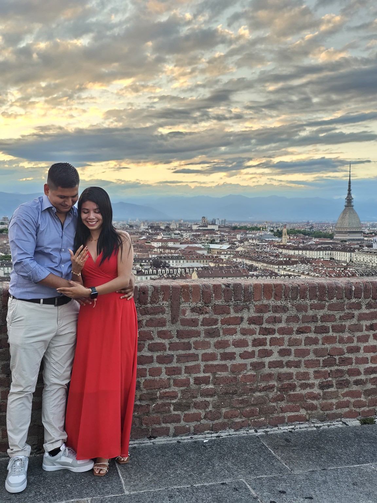

14 · OCT · 2020
Todo comenzó
Empezamos a conocernos sin imaginar hasta dónde nos llevarían aquellas primeras conversaciones. Poco a poco, dos caminos comenzaron a acercarse.

BIENVENIDOS
“Por tanto, dejará el hombre a su padre y a su madre, y se unirá a su mujer, y serán una sola carne.”Génesis 2:24
Dios permitió que nuestros caminos se encontraran, que nuestro amor creciera y que nuestros sueños se convirtieran en uno solo.
Hoy elegimos unir nuestras vidas, formar nuestro hogar y comenzar, de la mano de Dios, el capítulo más hermoso de nuestra historia.
NUESTRA HISTORIA
Hay historias que se planean… y otras que simplemente comienzan.
Empezamos a conocernos sin imaginar hasta dónde nos llevarían aquellas primeras conversaciones. Poco a poco, dos caminos comenzaron a acercarse.
Lo que había comenzado conociéndonos se convirtió en algo mucho más especial. Desde entonces empezamos a compartir la vida, las risas y nuestros sueños.

Nuestro noviazgo abrió una etapa de aventuras, viajes y recuerdos. Descubrimos que cualquier lugar puede volverse especial cuando lo vivimos juntos.





Durante nuestro viaje a Italia llegó uno de los momentos más importantes de nuestra historia. En Monte dei Cappuccini, con Turín como escenario, llegó la pregunta que nos conduciría hasta este día.
“¿Quieres casarte conmigo?”
Y un sí convirtió el siguiente destino en nuestro para siempre.
NUESTRO GRAN DÍA
Queremos vivir este momento delante de Dios y acompañados por las personas que forman parte de nuestra historia.
2:00 p. m.
Quinta Flores
Al finalizar la ceremonia continuaremos celebrando juntos en el mismo lugar.
UBICACIÓN
La ceremonia y la recepción se realizarán en el mismo lugar, en un ambiente al aire libre.
Roberto Astudillo · Guayas
Abrir ubicación en Google MapsCÓDIGO DE VESTIMENTA
Queremos que formes parte de la elegancia de este día.
Traje formal
Vestido formal
Con cariño, reservamos para nuestra decoración y cortejo los tonos de nuestra paleta.
DETALLES IMPORTANTES
La ceremonia inicia a las 2:00 p. m. Te recomendamos llegar con anticipación para acompañarnos desde el comienzo.
Quinta Flores será el escenario de toda nuestra celebración. Tenlo en cuenta al elegir tu calzado y atuendo.
Deseamos que todos puedan disfrutar plenamente de nuestra celebración, por ello hemos preparado este día especialmente para adultos. Agradecemos de corazón su comprensión y el respeto a los lugares indicados en su invitación.
REGALOS
Tu presencia es el regalo más importante para nosotros. Si deseas tener un detalle adicional, hemos elegido la modalidad de lluvia de sobres.
♡CONFIRMA TU ASISTENCIA
Esta invitación es personal y ha sido preparada especialmente para las personas indicadas en tu enlace.
Confirma tu asistencia hasta el 9 de diciembre de 2026.
INVITACIÓN PARA
Al abrir tu enlace personalizado aparecerán aquí los nombres de las personas incluidas en tu invitación.